Repair Procedures
Inspection
Smart Key Unit
- Refer to the BE group - inspection / self diagnosis with GDS.
Smart Key Switch
- Refer to the BE group - inspection / self diagnosis with GDS.
Antenna
- Refer to the BE group - inspection / self diagnosis with GDS.
Trunk Lid Open Switch
1. Check for continuity between the Trunk lid open switch terminals.
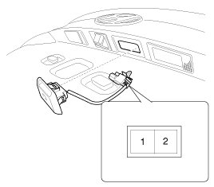
2. If continuity is not specified, inspect the switch
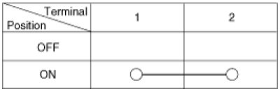
Removal
Smart key unit
1. Disconnect the negative(-) battery terminal.
2. Remove the glove box housing.
3. Remove the smart key unit(A) with loosening bolt and nut, then disconnect the connector.
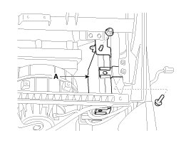
Interior #1 antenna
NOTE:
Take care not to scratch the crash pad and related parts.
1. Disconnect the negative(-) battery terminal.
2. Remove the console.
3. Disconnect the connector ,then remove the interior #1 antenna(A) with loosening 2 screws.
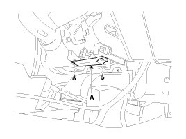
Interior #2 antenna
NOTE:
Take care not to scratch the crash pad and related parts.
1. Disconnect the negative(-) battery terminal.
2. Remove the console.
3. Disconnect the connector, then remove the interior #2 antenna(A) with loosening 2 screws.
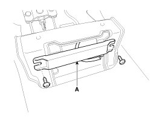
Trunk antenna
1. Disconnect the negative(-) battery terminal.
2. Remove the trunk transverse trim.
3. Disconnect the connector ,then remove the trunk antenna(A) with loosening 2 nuts.
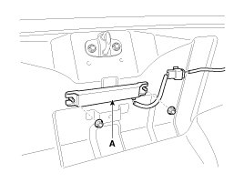
Exterior Bumper Antenna
1. Disconnect the negative(-) battery terminal.
2. Remove the rear bumper.
3. Remove the rear bumper rail.
4. Disconnect the connector ,then remove the rear bumper antenna(A) with loosening 2 screws.
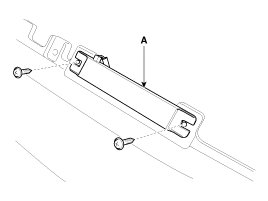
Buzzer
1. Disconnect the negative(-) battery terminal.
2. Remove the left head lamp.
3. Remove the buzzer(A) after disconnecting the connector.
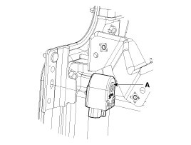
Door outside handle
1. Disconnect the negative(-) battery terminal.
2. Remove the front door module.
3. After loosening the mounting bolt, then remove the outside handle cover (A).
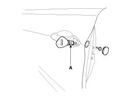
Trunk lid open switch
1. Disconnect the negative(-) battery terminal.
2. Remove the trunk door trim.
3. Disconnect the trunk lid open switch connector (A).
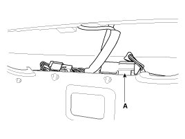
4. Remove the trunk outside handle(A) after pressing the clips.
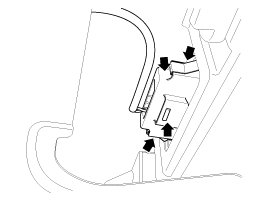
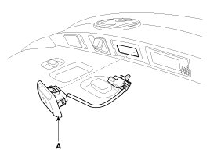
Installation
Smart Key Unit
1. Install the smart key unit.
2. Connect the connector and install the smart key unit.
3. Install the glove box.
4. Install the negative (-) battery terminal and check the smart key system.
Interior #1 Antenna
1. Install the interior #1 antenna.
2. Install the console.
3. Install the negative (-) battery terminal and check the smart key system.
Interior #2 Antenna
1. Install the interior #2 antenna.
2. Install the console.
3. Install the negative (-) battery terminal and check the smart key system.
Trunk Antenna
1. Install the trunk antenna.
2. Install the trunk transverse trim.
3. Install the negative (-) battery terminal and check the smart key system.
Exterior Bumper Antenna
1. Install the exterior bumper antenna.
2. Install the rear bumper.
3. Install the negative (-) battery terminal and check the smart key system.
Buzzer
1. Install the buzzer.
2. Install the left head lamp.
3. Install the negative (-) battery terminal and check the smart key system.
Door Outside Handle
1. Install the door outside handle.
2. Install the door trip.
3. Install the negative (-) battery terminal and check the smart key system.
Trunk open switch
1. Install the trunk open switch.
2. Install the trunk trim.
3. Install the negative (-) battery terminal and check the smart key system.